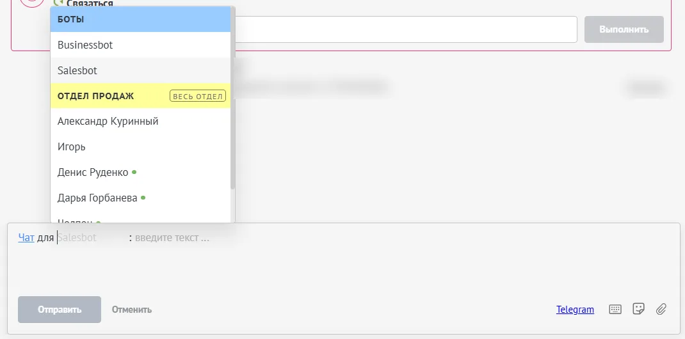
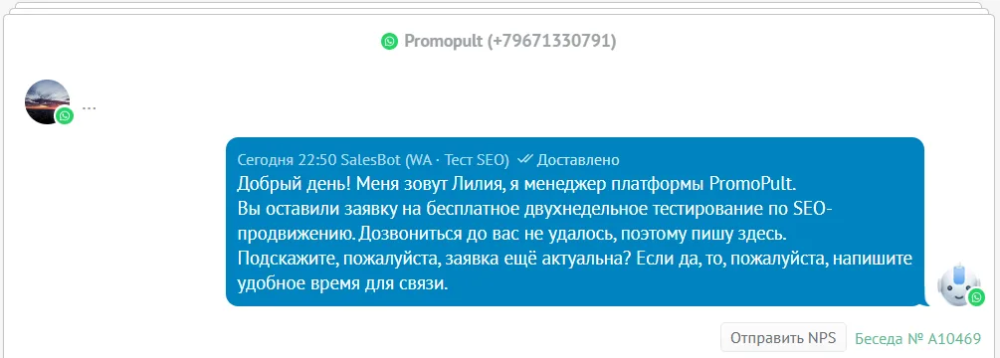
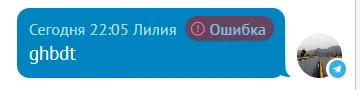

Salesbot: как отправить шаблон
Боты — только для недозвона (кроме «ВБ · инструкции», он отправляется после разговора). Сразу после первого недозвона отправляем шаблон по недозвону. Бот сам подставит имя клиента и ваше имя.
Строго по порядку: сначала контакт, потом чат. Если просто добавить номер и сразу искать бота, Salesbot в списке не появится.
1
Добавьте контакт
В сделке нажмите «Добавить контакт» и впишите номер телефона. В поле имени — только имя с большой буквы, например «Ирина». Имя берём то, что клиент указал при регистрации.
Имя есть и корректное → вписываем. Сообщение придёт именное: «Ирина, добрый день!»
Имени нет, оно на английском или странное (логин, почта, набор символов) → поле оставляем пустым. Сообщение придёт без имени.
2
Откройте чат
Внизу сделки нажмите на синее слово «Примечание» и выберите «Чат».

3
Выберите Salesbot
Появится «Чат для …». Нажмите на эту надпись и в блоке «Боты» выберите Salesbot.

4
Нажмите стрелочку ˅
Рядом с «Чат для Salesbot».

5
Выберите шаблон
Сначала мессенджер, потом сценарий. Например, «/WA· Обратный звонок». Какой выбрать — таблица в Шаблонах.

6
Нажмите «Запуск» и проверьте статус
Через несколько секунд в ленте сделки появится синее сообщение «SalesBot (название бота)».

✓ Доставлено — всё хорошо, клиент получил сообщение.
Ошибка — мессенджер не принял сообщение. Пробуем следующий мессенджер.

Не видно сообщения — обновите страницу (F5). Запускать бота повторно не нужно.
Правила отправки
- Пишем в один мессенджер, не во все сразу
- Шаблон выбираем по ситуации клиента
- В имя контакта — только имя, без фамилии, компании, почты или ника
- Есть вопрос или не хватает бота — приходите к Лилии с предложениями
PromoPult · Справочник менеджера